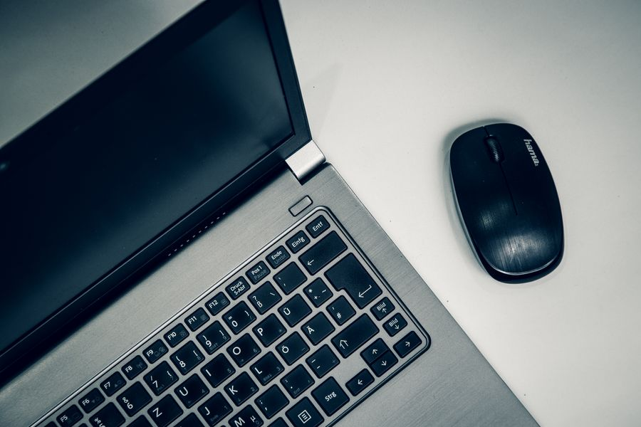
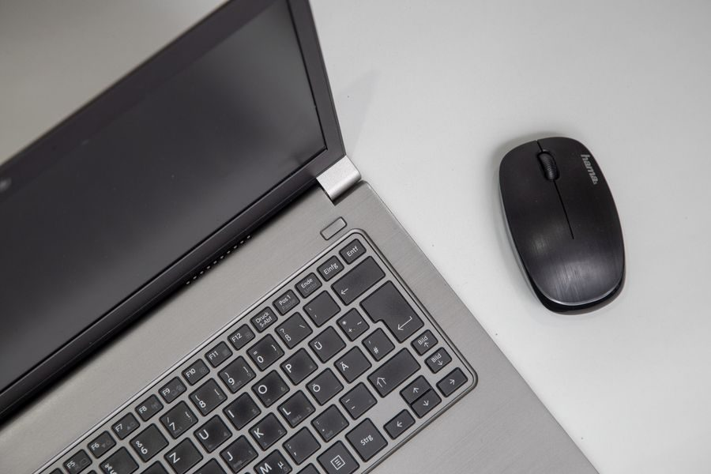

Los mejores en calidad-precio
El mejor 
Imagen orientativa El mejor para trabajar
Logitech MX Master 3S A favor La rueda libre cruza documentos enormes de un gesto Se conecta a tres equipos y cambia con un botón Clics silenciosos En contra Grande: con mano pequeña no es cómodo Si te pasas el día en el ordenador, es de las compras que más se notan.
Ver precio actual en Amazon
¿Te lo estás pensando? Añádelo al carrito en Amazon y decídelo con calma: te avisan si baja de precio y lo tienes a mano cuando te decidas.
No ponemos precios porque cambian cada día. Lo ves actualizado al entrar.
El mejor Imagen orientativa El mejor para jugar
Logitech G Pro X Superlight 2 A favor Ultraligero Receptor propio sin retardo Batería de semanas En contra Casi sin botones extra Para trabajar resulta demasiado ligero El estándar en juegos competitivos.
Ver precio actual en Amazon
¿Te lo estás pensando? Añádelo al carrito en Amazon y decídelo con calma: te avisan si baja de precio y lo tienes a mano cuando te decidas.
No ponemos precios porque cambian cada día. Lo ves actualizado al entrar.
Gama media Imagen orientativa Gama media · para portátil
Logitech MX Anywhere 3S A favor Compacto, cabe en la funda del portátil Rueda libre y clics silenciosos Funciona hasta sobre cristal En contra Pequeño para manos grandes El MX Master en versión de viaje. Si trabajas fuera de casa, este.
Ver precio actual en Amazon
¿Te lo estás pensando? Añádelo al carrito en Amazon y decídelo con calma: te avisan si baja de precio y lo tienes a mano cuando te decidas.
No ponemos precios porque cambian cada día. Lo ves actualizado al entrar.
El mejor barato 
Imagen orientativa El mejor de los baratos
Logitech M331 Silent Plus A favor El clic no se oye Pila que dura años Muy barato En contra Sin lujos No es para juegos La compra más sensata si solo quieres un ratón que funcione y no moleste.
Ver precio actual en Amazon
¿Te lo estás pensando? Añádelo al carrito en Amazon y decídelo con calma: te avisan si baja de precio y lo tienes a mano cuando te decidas.
No ponemos precios porque cambian cada día. Lo ves actualizado al entrar.